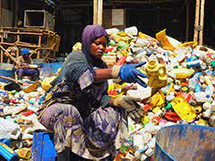
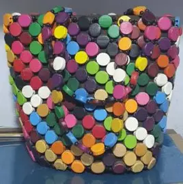

Our mission
We divert waste from landfill and transform it into valuable materials and products, partnering with communities, businesses and municipalities to build a resilient circular economy.
Tokasuula a luganda word meaning "dont drop that plastic"
Vision & values
Vision: A world where nothing is wasted — resources are reused, jobs are created, and communities thrive.
Core values
- Environmental stewardship
- Transparency and integrity
- Community empowerment
- Innovation in recycling
What we do
- Collection & logistics: Household and business pickup with route optimization.
- Material sorting & processing: Manual and mechanical sorting to maximize recovery.
- Upcycling & product design: Converting materials into useful products and local enterprises.
- Consulting & education: Workshops, audits and programs to reduce waste.
How it works
- Schedule a pickup via website or phone.
- Collected materials are sorted and processed.
- Recovered materials are sold or upcycled into products.
- Customers receive impact reports on diversion and CO₂ avoided.
Our impact
- Job creation for unemployed youth and women through waste collection and recycling.
- A cleaner, healthier community with reduced pollution and improved public health.
- Support for local jobs and community programs.
Team
- SSENYONJ0 PETER — Founder & CEO
- MUBIRU MARK — Operations Lead
- AMONG RITAH — Community Programs
Gallery
Examples of our work and community programs.
.webp)

Material sorting & processing

Upcycled products and community workshops
Get in touch
For partnerships, drop-off locations or to schedule services, email info@tokasuula.org or visit the contact page.